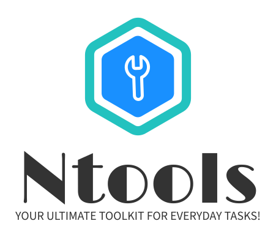

Tired of switching between multiple apps for simple tasks? Ntools is your all-in-one solution, bringing together a variety of essential tools to make your daily life easier. Whether it’s productivity, utilities, calculations, or organization, Ntools streamlines everything into a single, user-friendly platform. Simplify, save time, and get more done with Ntools!
✅ One Platform, Multiple Tools – From productivity to utilities, everything you need is just a click away.
✅ Time-Saving & Convenient – No more downloading separate apps. Ntools keeps it all in one place.
✅ User-Friendly & Intuitive – Designed for ease of use, so anyone can access the tools effortlessly.
✅ Free & Accessible – No hidden costs, just simple and effective tools at your fingertips.
With Ntools, everything you need is just one click away. No more searching, no more switching—just one powerful platform for all your tasks!
👉 Get Started Today & Experience the Ease of Ntools!